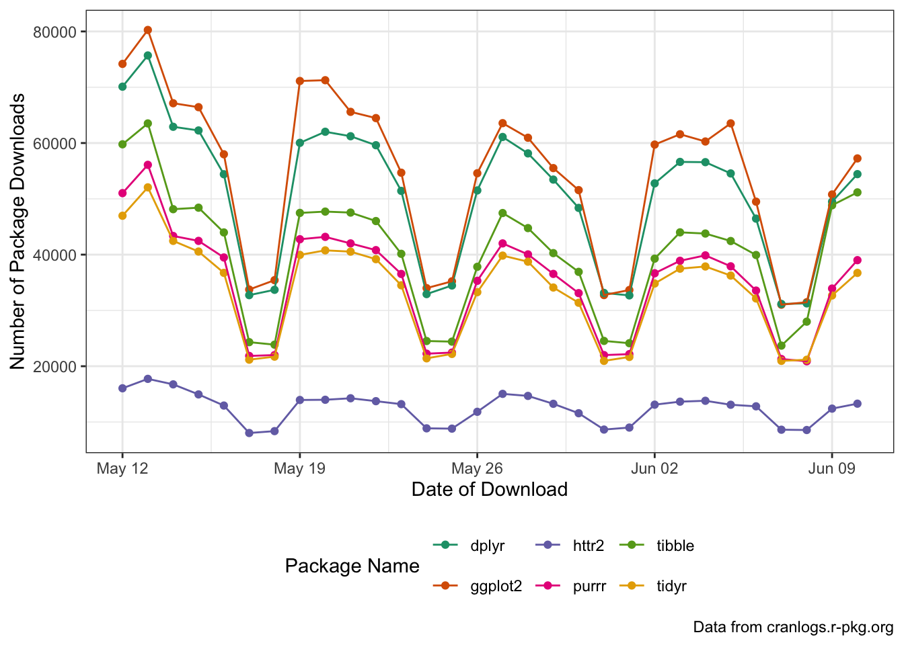

library(tidyverse)STA 9750 Week 9 In-Class Activity: Data Import
This week, we are going to practice accessing data from a nice API using httr2. Specifically, we are going to interact with the cranlogs server, which keeps records of the most popular R packages based on download frequency.
Documentation for cranlogs can be found in its GitHub README with a very small example at here.1
The cranlogs documentation give the following example of how the curl program can call the API from the command line:
curl https://cranlogs.r-pkg.org/downloads/total/last-week/ggplot2 % Total % Received % Xferd Average Speed Time Time Time Current
Dload Upload Total Spent Left Speed
0 0 0 0 0 0 0 0 --:--:-- --:--:-- --:--:-- 0
100 82 100 82 0 0 274 0 --:--:-- --:--:-- --:--:-- 275
[{"start":"2025-06-04","end":"2025-06-10","downloads":343829,"package":"ggplot2"}]Even though this is not R code, we can emulate this action in R.
library(jsonlite)
Attaching package: 'jsonlite'The following object is masked from 'package:purrr':
flattenfromJSON("https://cranlogs.r-pkg.org/downloads/total/last-week/ggplot2") start end downloads package
1 2025-06-04 2025-06-10 343829 ggplot2And if we want to get download information for other packages, we can simply modify the URL:
library(jsonlite)
fromJSON("https://cranlogs.r-pkg.org/downloads/total/last-week/dplyr") start end downloads package
1 2025-06-04 2025-06-10 323929 dplyrlibrary(jsonlite)
fromJSON("https://cranlogs.r-pkg.org/downloads/total/last-week/readr") start end downloads package
1 2025-06-04 2025-06-10 192110 readrand so on. But this quickly becomes repetitive and we would prefer a programmatic interface. This is where the httr2 package comes in.
httr2
httr2 takes a “three-stage” approach to handling HTTP requests:
- First, we build a request, specifying the URL to be queried, the mode of that query, and any relevant information (data, passwords, etc.)
- Then, we execute that request to get a response
- Finally, we handle that response, transforming its contents into
Ras appropriate
Let’s look at these one at a time.
Build a Request
We can build a request using the request function:
library(httr2)
requestfunction (base_url)
{
new_request(base_url)
}
<bytecode: 0x123e8d050>
<environment: namespace:httr2>As seen here, we start a request by putting in a “base URL” - this is the unchanging part of the URL that won’t really depend on what query we are making.
For the cranlogs API, we can take the base URL to be
https://cranlogs.r-pkg.org
so our base request is:
my_req <- request("https://cranlogs.r-pkg.org")
print(my_req)<httr2_request>GET https://cranlogs.r-pkg.orgBody: emptyWe see here that this is a GET request by default, indicating we would like a response from the server, but we are not
We then modify the path of the request to point to the specific resource or endpoint we want to query. For example, if we want to get the “top” R packages for the last day, we can run the following:
my_req <- my_req |>
req_url_path_append("top") |>
req_url_path_append("last-day")
print(my_req)<httr2_request>GET https://cranlogs.r-pkg.org/top/last-dayBody: emptyExecute a Request to get a Response
Now that we have built our request, we pass it to req_perform2 to execute (perform) the request:
my_resp <- req_perform(my_req)
print(my_resp)<httr2_response>GET https://cranlogs.r-pkg.org/top/last-dayStatus: 200 OKContent-Type: application/jsonBody: In memory (450 bytes)The result of performing this request is a response object. We see several things in this response:
- We received back a “200 OK” response, indicating that our query worked perfectly
- We received back data in a
jsonformat - Our results are currently in memory (as opposed to be saved to a file)
Process the Response for Use in R
Since we know our response is in JSON format, we can use the resp_body_json to get the “body” (content) of the response and parse it as json:
downloads_raw <- resp_body_json(my_resp)
print(downloads_raw)$start
[1] "2025-06-10T00:00:00.000Z"
$end
[1] "2025-06-10T00:00:00.000Z"
$downloads
$downloads[[1]]
$downloads[[1]]$package
[1] "rlang"
$downloads[[1]]$downloads
[1] "59717"
$downloads[[2]]
$downloads[[2]]$package
[1] "ggplot2"
$downloads[[2]]$downloads
[1] "57245"
$downloads[[3]]
$downloads[[3]]$package
[1] "cli"
$downloads[[3]]$downloads
[1] "56445"
$downloads[[4]]
$downloads[[4]]$package
[1] "dplyr"
$downloads[[4]]$downloads
[1] "54429"
$downloads[[5]]
$downloads[[5]]$package
[1] "tibble"
$downloads[[5]]$downloads
[1] "51157"
$downloads[[6]]
$downloads[[6]]$package
[1] "tidyverse"
$downloads[[6]]$downloads
[1] "50955"
$downloads[[7]]
$downloads[[7]]$package
[1] "utf8"
$downloads[[7]]$downloads
[1] "48166"
$downloads[[8]]
$downloads[[8]]$package
[1] "glue"
$downloads[[8]]$downloads
[1] "47633"
$downloads[[9]]
$downloads[[9]]$package
[1] "lifecycle"
$downloads[[9]]$downloads
[1] "47534"This gives us the type of data we were looking for!
Note that httr2 is designed for “piped” work, so we can write the entire process as
request("https://cranlogs.r-pkg.org") |>
req_url_path_append("top") |>
req_url_path_append("last-day") |>
req_perform() |>
resp_body_json()$start
[1] "2025-06-10T00:00:00.000Z"
$end
[1] "2025-06-10T00:00:00.000Z"
$downloads
$downloads[[1]]
$downloads[[1]]$package
[1] "rlang"
$downloads[[1]]$downloads
[1] "59717"
$downloads[[2]]
$downloads[[2]]$package
[1] "ggplot2"
$downloads[[2]]$downloads
[1] "57245"
$downloads[[3]]
$downloads[[3]]$package
[1] "cli"
$downloads[[3]]$downloads
[1] "56445"
$downloads[[4]]
$downloads[[4]]$package
[1] "dplyr"
$downloads[[4]]$downloads
[1] "54429"
$downloads[[5]]
$downloads[[5]]$package
[1] "tibble"
$downloads[[5]]$downloads
[1] "51157"
$downloads[[6]]
$downloads[[6]]$package
[1] "tidyverse"
$downloads[[6]]$downloads
[1] "50955"
$downloads[[7]]
$downloads[[7]]$package
[1] "utf8"
$downloads[[7]]$downloads
[1] "48166"
$downloads[[8]]
$downloads[[8]]$package
[1] "glue"
$downloads[[8]]$downloads
[1] "47633"
$downloads[[9]]
$downloads[[9]]$package
[1] "lifecycle"
$downloads[[9]]$downloads
[1] "47534"This data is not super helpful for us, since it’s in a “list of lists” format. This is not uncommon with json responses and it is usually at this point that we have a bit of work to do in order to make the data useable. Thankfully, API data is typically well-structured, so this doesn’t wind up being too hard. I personally find this type of complex R output a bit hard to parse, so I instead print it as a “string” (the ‘raw text’ of the unparsed JSON) and use the prettify() function from the jsonlite package to make it extra readable:
library(jsonlite)
Attaching package: 'jsonlite'The following object is masked from 'package:purrr':
flattenmy_resp |>
resp_body_string() |>
prettify(){
"start": "2025-06-10T00:00:00.000Z",
"end": "2025-06-10T00:00:00.000Z",
"downloads": [
{
"package": "rlang",
"downloads": "59717"
},
{
"package": "ggplot2",
"downloads": "57245"
},
{
"package": "cli",
"downloads": "56445"
},
{
"package": "dplyr",
"downloads": "54429"
},
{
"package": "tibble",
"downloads": "51157"
},
{
"package": "tidyverse",
"downloads": "50955"
},
{
"package": "utf8",
"downloads": "48166"
},
{
"package": "glue",
"downloads": "47633"
},
{
"package": "lifecycle",
"downloads": "47534"
}
]
}
This is the same data as before, but much easier to read. At this point, we should pause and make an ‘attack plan’ for our analysis. I see several things here:
- I really only want the
"downloads"part of the response. - Each element inside
downloadshas the same flat structure, so they can be easily built into a one-row data frame. - The column names are the same for each
downloadselement, so we will be able to put them into one big easy-to-use data frame.
To do these steps, we will need to use functionality from the purrr package, which we will discuss in more detail next week. For now, it suffices to run:
library(purrr)
library(tibble)
downloads_df <- downloads_raw |>
pluck("downloads") |>
map(as_tibble) |>
list_rbind()Here, we see we
- Pulled out the
"downloads"portion of the JSON (pluck) - Converted each row to a data frame (
map(as_tibble)) - Combined the results rowwise (
list_rbind)
The result is a very nice little data frame:
downloads_df# A tibble: 9 × 2
package downloads
<chr> <chr>
1 rlang 59717
2 ggplot2 57245
3 cli 56445
4 dplyr 54429
5 tibble 51157
6 tidyverse 50955
7 utf8 48166
8 glue 47633
9 lifecycle 47534 Your Turn!
Now it’s your turn! In your breakout rooms, try the following:
Make sure you can run all of the code above.
Modify the above code to get the top 100
Rpackages.This is a minor change to the request only, but you will need to read the documentation to see where and how the request needs to be changed.
Solution
request("https://cranlogs.r-pkg.org") |>
req_url_path_append("top") |>
req_url_path_append("last-day") |>
req_url_path_append(100) |>
req_perform() |>
resp_body_json() |>
pluck("downloads") |>
map(as_tibble) |>
list_rbind()# A tibble: 100 × 2
package downloads
<chr> <chr>
1 rlang 59717
2 ggplot2 57245
3 cli 56445
4 dplyr 54429
5 tibble 51157
6 tidyverse 50955
7 utf8 48166
8 glue 47633
9 lifecycle 47534
10 ragg 46870
# ℹ 90 more rowsModify your query to get the daily downloads for the
ggplot2package over the last month. This will require changes to how you process the response, so be sure to look at the raw JSON first.Hint: The
pluckfunction can also take a number as input. This will say which list item (by position) to return.
Solution
request("https://cranlogs.r-pkg.org") |>
req_url_path_append("downloads") |>
req_url_path_append("daily") |>
req_url_path_append("last-month") |>
req_url_path_append("ggplot2") |>
req_perform() |>
resp_body_json() |>
pluck(1)$downloads
$downloads[[1]]
$downloads[[1]]$day
[1] "2025-05-12"
$downloads[[1]]$downloads
[1] 74185
$downloads[[2]]
$downloads[[2]]$day
[1] "2025-05-13"
$downloads[[2]]$downloads
[1] 80265
$downloads[[3]]
$downloads[[3]]$day
[1] "2025-05-14"
$downloads[[3]]$downloads
[1] 67136
$downloads[[4]]
$downloads[[4]]$day
[1] "2025-05-15"
$downloads[[4]]$downloads
[1] 66430
$downloads[[5]]
$downloads[[5]]$day
[1] "2025-05-16"
$downloads[[5]]$downloads
[1] 57986
$downloads[[6]]
$downloads[[6]]$day
[1] "2025-05-17"
$downloads[[6]]$downloads
[1] 33745
$downloads[[7]]
$downloads[[7]]$day
[1] "2025-05-18"
$downloads[[7]]$downloads
[1] 35424
$downloads[[8]]
$downloads[[8]]$day
[1] "2025-05-19"
$downloads[[8]]$downloads
[1] 71123
$downloads[[9]]
$downloads[[9]]$day
[1] "2025-05-20"
$downloads[[9]]$downloads
[1] 71261
$downloads[[10]]
$downloads[[10]]$day
[1] "2025-05-21"
$downloads[[10]]$downloads
[1] 65592
$downloads[[11]]
$downloads[[11]]$day
[1] "2025-05-22"
$downloads[[11]]$downloads
[1] 64472
$downloads[[12]]
$downloads[[12]]$day
[1] "2025-05-23"
$downloads[[12]]$downloads
[1] 54685
$downloads[[13]]
$downloads[[13]]$day
[1] "2025-05-24"
$downloads[[13]]$downloads
[1] 33998
$downloads[[14]]
$downloads[[14]]$day
[1] "2025-05-25"
$downloads[[14]]$downloads
[1] 35217
$downloads[[15]]
$downloads[[15]]$day
[1] "2025-05-26"
$downloads[[15]]$downloads
[1] 54587
$downloads[[16]]
$downloads[[16]]$day
[1] "2025-05-27"
$downloads[[16]]$downloads
[1] 63564
$downloads[[17]]
$downloads[[17]]$day
[1] "2025-05-28"
$downloads[[17]]$downloads
[1] 60951
$downloads[[18]]
$downloads[[18]]$day
[1] "2025-05-29"
$downloads[[18]]$downloads
[1] 55510
$downloads[[19]]
$downloads[[19]]$day
[1] "2025-05-30"
$downloads[[19]]$downloads
[1] 51562
$downloads[[20]]
$downloads[[20]]$day
[1] "2025-05-31"
$downloads[[20]]$downloads
[1] 32754
$downloads[[21]]
$downloads[[21]]$day
[1] "2025-06-01"
$downloads[[21]]$downloads
[1] 33659
$downloads[[22]]
$downloads[[22]]$day
[1] "2025-06-02"
$downloads[[22]]$downloads
[1] 59723
$downloads[[23]]
$downloads[[23]]$day
[1] "2025-06-03"
$downloads[[23]]$downloads
[1] 61577
$downloads[[24]]
$downloads[[24]]$day
[1] "2025-06-04"
$downloads[[24]]$downloads
[1] 60278
$downloads[[25]]
$downloads[[25]]$day
[1] "2025-06-05"
$downloads[[25]]$downloads
[1] 63525
$downloads[[26]]
$downloads[[26]]$day
[1] "2025-06-06"
$downloads[[26]]$downloads
[1] 49496
$downloads[[27]]
$downloads[[27]]$day
[1] "2025-06-07"
$downloads[[27]]$downloads
[1] 31030
$downloads[[28]]
$downloads[[28]]$day
[1] "2025-06-08"
$downloads[[28]]$downloads
[1] 31470
$downloads[[29]]
$downloads[[29]]$day
[1] "2025-06-09"
$downloads[[29]]$downloads
[1] 50785
$downloads[[30]]
$downloads[[30]]$day
[1] "2025-06-10"
$downloads[[30]]$downloads
[1] 57245
$start
[1] "2025-05-12"
$end
[1] "2025-06-10"
$package
[1] "ggplot2" pluck("downloads") |>
map(as_tibble) |>
list_rbind()# A tibble: 1 × 1
value
<chr>
1 downloads‘Functionize’ your daily downloads query as a function which takes an arbitrary package name and gets its daily downloads.
Hint: Use a
mutatecommand to add the package name as a new column to the resulting data frame and to convert thedaycolumn to aDateobject (day=as.Date(day)).
Solution
library(dplyr)
get_downloads <- function(pkg){
request("https://cranlogs.r-pkg.org") |>
req_url_path_append("downloads") |>
req_url_path_append("daily") |>
req_url_path_append("last-month") |>
req_url_path_append(pkg) |>
req_perform() |>
resp_body_json() |>
pluck(1) |>
pluck("downloads") |>
map(as_tibble) |>
list_rbind() |>
mutate(package=pkg,
day=as.Date(day))
}
gg_downloads <- get_downloads("ggplot2")
print(gg_downloads)# A tibble: 30 × 3
day downloads package
<date> <int> <chr>
1 2025-05-12 74185 ggplot2
2 2025-05-13 80265 ggplot2
3 2025-05-14 67136 ggplot2
4 2025-05-15 66430 ggplot2
5 2025-05-16 57986 ggplot2
6 2025-05-17 33745 ggplot2
7 2025-05-18 35424 ggplot2
8 2025-05-19 71123 ggplot2
9 2025-05-20 71261 ggplot2
10 2025-05-21 65592 ggplot2
# ℹ 20 more rows- Use your function to get daily downloads for the following
Rpackages:ggplot2dplyrhttr2tibblepurrrtidyrand combine your results into a single data frame. Then plot the download trends for each package usingggplot2.
map() |> list_rbind()idiom here as well.
Solution
library(ggplot2)
PACKAGES <- c("ggplot2", "dplyr", "httr2", "tibble", "purrr", "tidyr")
map(PACKAGES, get_downloads) |>
list_rbind() |>
ggplot(aes(x=day,
y=downloads,
color=package,
group=package)) +
geom_point() +
geom_line() +
scale_x_date() +
xlab("Date of Download") +
ylab("Number of Package Downloads") +
theme_bw() +
labs(caption="Data from cranlogs.r-pkg.org") +
theme(legend.position="bottom") +
scale_color_brewer(type="qual",
palette=2,
name="Package Name")
Footnotes
In this case, there is a
cranlogspackage for interacting with this API. This type of package is commonly called a “wrapper” because it shields the user from the details of the API and exposes a more idiomatic (and more useful) interface. In general, when you can find anRpackage that wraps an API, it is a good idea to use it. For certain very complex APIs, e.g., the API that powers Bloomberg Financial Information Services, use of the associatedRpackage is almost mandatory because the underlying API is so complicated. For this in-class exercise, we will use the “raw” API as practice since you can’t always assume a niceRpackage will exist.↩︎We will only use the basic
req_performfor now, buthttr2provides options for parallel execution, delayed execution, etc..↩︎